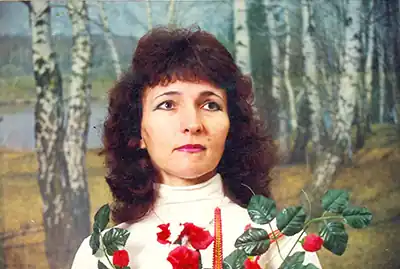
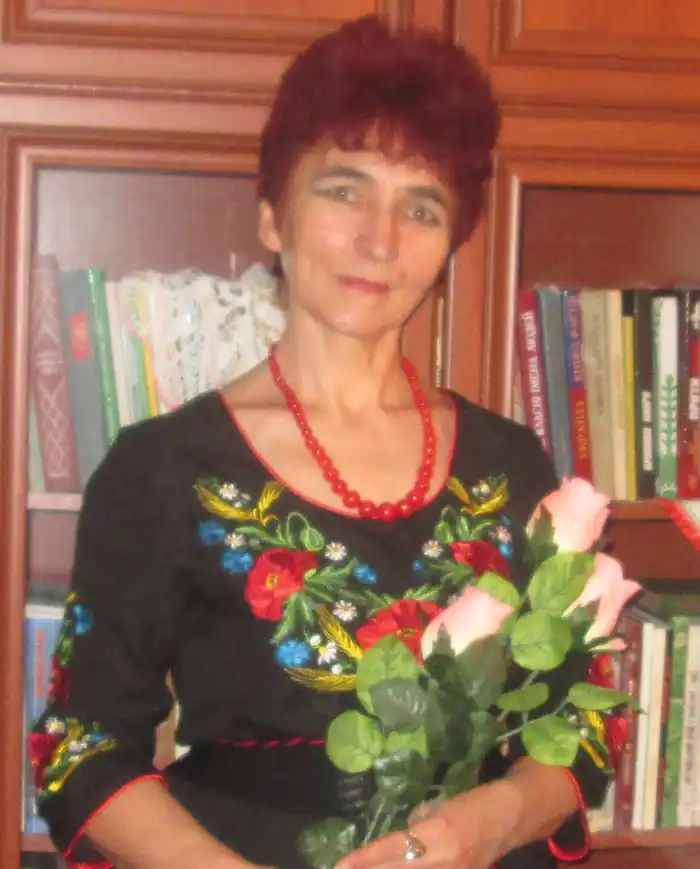

Народилася 28 січня 1959 р. в с. Теліжинці на Старосинявщині (Хмельниччина). Закінчила Кам'янець-Подільський педінститут (філологічний ф-т). Працювала вчителькою рідної словесности, кореспондентом районної газети "Колос", редактором обласної г-ти "Крок", кореспондентом обласної "Подільські вісті". Нині – кореспондент Хмельницького обласного радіомовлення.
Голова районного відділення Всеукраїнського об'єднання ветеранів та РО ВТ "Просвіта" ім. Т.Шевченка. Член НСКУ, АДГУ, НСЖУ. Була депутатом селищної та районної рад. Фундатор і голова районного літоб'єднання "Джерелинка" і районної дитячої літературної студії "Муза Надіквиння". Член Хмельницької літературної спілки "Поділля", Хмільницького літературно-мистецького клубу "Золота троянда" (віце-президент із питань української духовности; Вінниччина), Всеукраїнської творчої спілки "Літературний форум". Ревнительниця української культури та мови як єдиної державної. У різних виданнях опублікувала понад 200 праць: історичні розвідки, дослідження, статті, краєзнавчі та публіцистичні матеріали. Низка віршів стали піснями.
Автор 13 збірок: "Перша крапелька", "Джерелинка", "Квіти грудня", "Городище над Іквою", "На човнику долоньки", "Загублений перстень", "Барва смерті – 33-ій", "Душа не терпить порожнечі", "ОдКРОВеннЯ", "Краплини сонця на долоньці", "Вустами правди і болю", "Із народної криниці", "Дві барви". Редактор, співредактор і співавтор багатьох колективних альманахів. Друкувалась у часописах "Українська культура", "Дивослово", "Радосинь", "Педагогічний вісник" "Заповіт батьків". Перекладає українською твори Ганни Ахматової й інших москвомовних авторів. Лавреат Хмельницької обласної літературної премії ім. М.Годованця. Леді ордена "За заслуги" ІІІ ст.